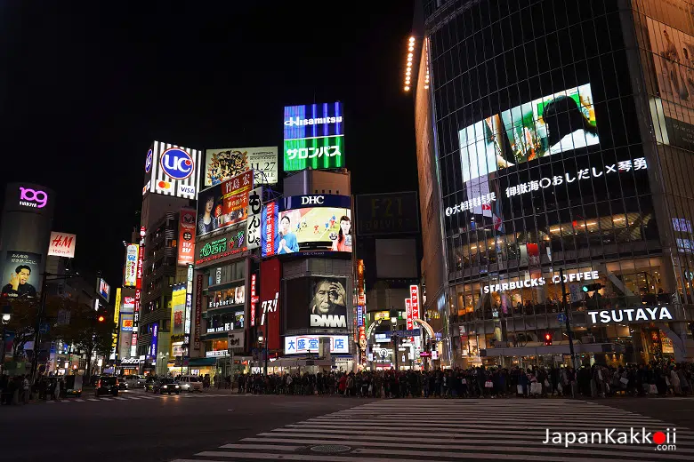

ย่านชิบูย่าถือได้ว่าเป็นศูนย์กลางของวัยรุ่นโดยเฉพาะอย่างยิ่งในด้านแฟชั่น มีแหล่งช้อปปิ้ง ห้างสรรพสินค้าขนาดใหญ่ ร้านค้า รวมทั้งช็อปของแบรนด์ดังอยู่มากมาย นอกจากนั้นแล้วก็ยังมีร้านอาหารและแหล่งบันเทิงอย่างครบครัน มีผู้คนทั้งชาวญี่ปุ่นและนักท่องเที่ยวชาวต่างชาติเดินขวักไขว่อยู่ตลอดทั้งวัน

ในช่วงกลางคืนก็ยังเป็นย่านที่เต็มไปด้วยสีสัน ร้านค้าหลายร้านในย่านนี้เปิดให้บริการกันถึงเกือบเที่ยงคืนและบางร้านก็เปิดกันแบบ 24 ชั่วโมงเลยทีเดียว
แลนด์มาร์ค
ห้าแยกชิบูย่า
ห้าแยกชิบูย่าเป็นทางแยกขนาดใหญ่ที่อยู่ด้านหน้าสถานี Shibuya ประกอบไปด้วย ทางม้าลาย จอขนาดยักษ์ตามตึกต่างๆ รถยนต์ที่สัญจรไปมา และผู้คนที่พลุกพล่าน ซึ่งในช่วงพีคๆ นั้นมีคนข้ามไปมา 1,000 – 2,500 คนเลยทีเดียว เป็นแลนด์มาร์คของโตเกียวที่ใช้ถ่ายทำภาพยนตร์และซีรี่ส์ทั้งของญี่ปุ่นและต่างประเทศ นักท่องเที่ยวที่มาที่นี่ต่างต้องมาเก็บภาพเป็นที่ระลึก
รูปปั้นที่ระลึกของ “ฮาจิโกะ (Hachiko)” สุนัขพันธุ์อากิตะซึ่งได้ขนานนามว่าเป็นสุนัขยอดกตัญญู ตั้งอยู่ตรงทางออกของสถานี Shibuya ซึ่งเป็นสถานที่ที่ฮาจิโกะมารอเจ้านรูปปั้นที่ระลึกของ “ฮาจิโกะ (Hachiko)” สุนัขพันธุ์อากิตะซึ่งได้ขนานนามว่าเป็นสุนัขยอดกตัญญู ตั้งอยู่ตรงทางออกของสถานี Shibuya ซึ่งเป็นสถานที่ที่ฮาจิโกะมารอเจ้านายกลับจากทำงาน แม้ว่าเจ้านายจะเสียชีวิตไปหลายปีแล้ว แต่ฮาจิโกะก็ยังมาเฝ้ารอเจ้านายทุกวันจนกระทั่งมันได้เสียชีวิตลง ปัจจุบันที่บริเวณรูปปั้นนั้นได้กลายเป็นสถานที่นัดพบยอดนิยม